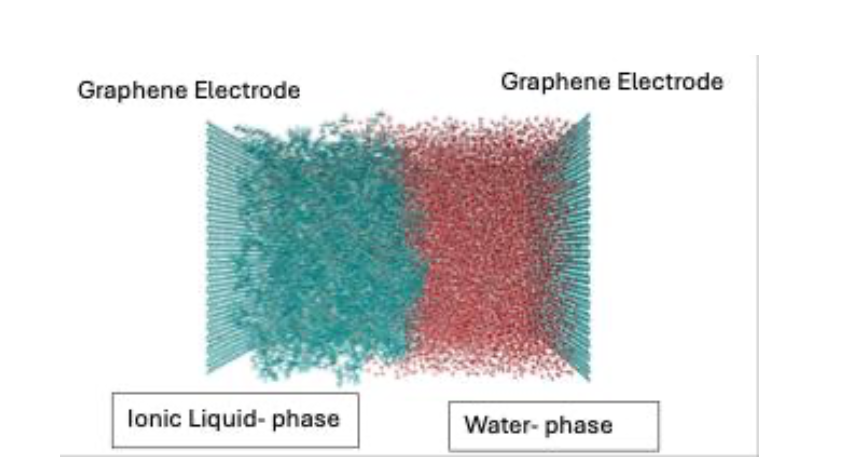

Research
Connecting molecular structure, computation, and material performance.
My work combines atomistic simulation, machine learning, and materials informatics to study polymer networks, amorphous materials, and chemically realistic materials discovery.
Current research · 01
Crosslinked polymer networks for dental biomaterials
I use virtual curing and molecular dynamics to connect monomer chemistry, network formation, and processing history with the thermomechanical properties of dental resin systems.

Current research · 02
AI-guided discovery of BPA-free backbones for dental resins
I develop data-efficient workflows that combine molecular descriptors, Gaussian-process surrogates, active learning, and multi-objective Bayesian optimization to identify chemically realistic candidates for virtual-curing simulations.

Current research · 03
Amorphous silica and machine-learning interatomic potentials
I use large-scale machine-learning molecular dynamics and diffraction-based validation to study liquid-to-glass evolution, network topology, and short- to medium-range order in silica.

Master's Thesis · 04
Ionic-liquid interfaces for lanthanide separation
During my master’s research at the University of Wyoming, I used atomistic simulations to investigate phosphonium-based ionic liquids, interfacial structure, solvation free energies, and voltage-driven rare-earth ion transfer.
